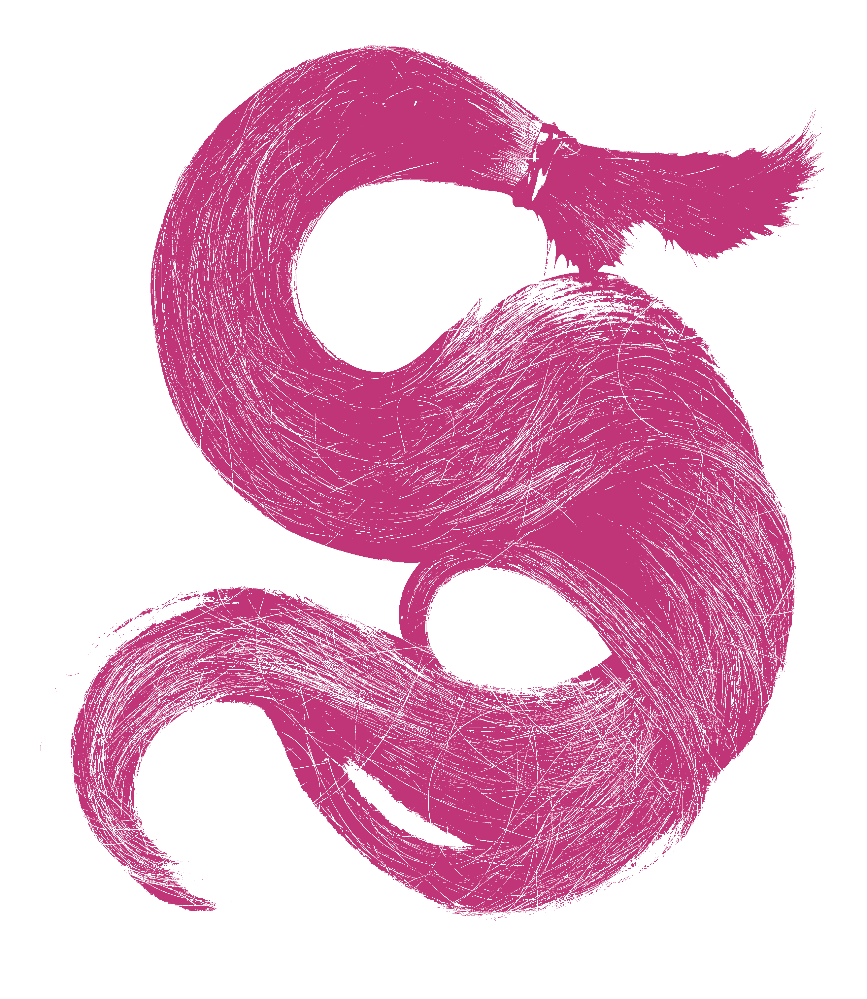
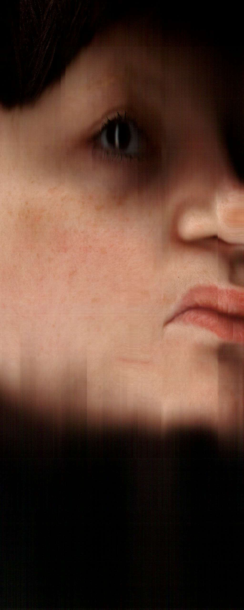

De quem vens?
Who do you come from?
A importância de olhar para dentro
The importance of looking in
.png)



A importância de olhar para dentro
O umbigo como certificado de nascimento, o umbigo como intermediário, o umbigo como prova de uma conquista pelo mundo real, o umbigo como uma transição entre o interior e o exterior. O corpo que nos origina como local.
O umbigo é a cicatriz resultante da separação de dois corpos. Depois do ritual da nascença é feito o primeiro corte que oficializa a independência física entre o corpo original e o corpo originado.
Se aceitarmos o estômago como a primeira cesta e o útero como primeiro berço, podemos sugerir o umbigo como a primeira conversa.
The Importance of Looking In
The navel as a birth certificate, the navel as an intermediary, the navel as proof of an achievement in the real world, the navel as a transition between the interior and the exterior. The body that originates us as a place.
The navel is the scar resulting from the separation of two bodies. After the birth ritual, the first cut is made that formalizes the physical independence between the original body and the originated body.
If we accept the stomach as the first carrier bag and the uterus as the first cradle, we can suggest the navel as the first conversation.


Este projeto resulta de um pensamento profundo sobre comunidade, dependência e do resultado de uma introspecção começada pelo exercício de olhar para o umbigo. A imaginação de uma linha contínua que interliga barrigas e corpos e úteros e barrigas e corpos e úteros e barrigas e corpos e úteros até ao começo do mundo.
A memória e a nostalgia trazem-nos a conclusões cómicas, porque é que a minha mãe decidiu guardar o meu coto umbilical se eu carrego no corpo a marca da nossa dependência? Neste projeto, a oferta dos fios do meu cabelo, presos em molas para cordões umbilicais, são a lembrança dessa dependência que sentimos uns pelos outros, os nossos amigos e colegas carregam-nos ao colo e alimentam-nos e dependem de nós da mesma forma que dependemos de tudo o resto.
É importante mantermo-nos conectados, não podemos permitir que esta linha permaneça invisível, cabe-nos a nós ser mais dependentes, mais permeáveis, mais interligados com o outro.
This project results from deep thought about community, dependence, and the outcome of an introspection initiated by the exercise of looking at the navel. Imagining a continuous line that connects bellies and bodies and uteruses and bellies and bodies and uteruses and bellies and bodies and uteruses all the way to the beginning of the world.
Memory and nostalgia lead us to comical conclusions: why did my mother decide to keep my umbilical stump if I carry the mark of our dependence on my body? In this project, the offering of strands of my hair, attached to umbilical cord clamps, is a reminder of this dependence we feel for one another. Our friends and colleagues carry us in their arms, feed us, and depend on us in the same way we depend on everything else.
It is important to stay connected; we cannot allow this line to remain invisible. It is up to us to be more dependent, more permeable, more interconnected with others.
De quem vens?
Projeção de duas digitalizações, uma do meu umbigo e outra do meu couro cabeludo. Os convidados foram presenteados à entrada com uma impressão A4 de três variações e incentivados a recolher o objeto proveniente da junção das molas de cordão umbilical com cabelo humano.
Cabelos humanos, molas de cordão umbilical, projeção, impressão em jato de tinta, madeiras, tecidos.
Who do you come from?
Projection of two digital scans, one of my navel and one of my scalp. Guests were given an A4 print of three variations at the entrance and encouraged to collect the object resulting from the joining of umbilical cord clamps with human hair.
Human hair, umbilical cord clamps, projection, inkjet print, wood, fabrics.